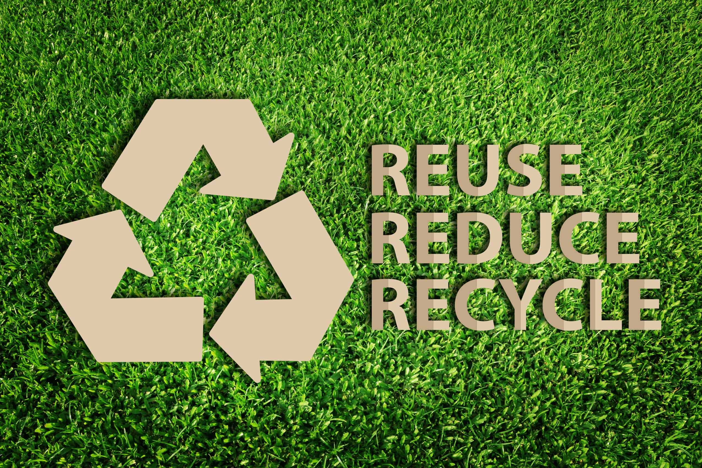

3r merupakan singkatan dari kata Reuse, Reduce, dan Recyle hingga saat ini 3r masih menjadi cara terbaik dalam melakukan berbagai permasalahan seperti mengelola dan menangani sampah-sampah yang ada di lingkungan sekitar kita, 3r merupakan langkah-langkah dalam melakukan proses daur ulang sampah dari yang terbuang dan tidak berguna menjadi berguna bahkan bisa menghasilkan uang kembali.
Penerapan sistem 3r merupakan solusi dalam mengelola sampah menjadi berguna seperti kompos atau menjadikan sampah sebagai sumber listrik, sudah banya pembangkit listrik yang menggunakan sampah sebagai sumber utamanya, bahkan sistem 3r ini cara penggunaan dan pengelolaannya bisa dilakukan siapa saja karena cara melakukannya mudah dan simpel, Reduse, Reuse, Recyle memiliki makna dan arti yang saling berkaitan berikut makna dan pengertian dari 3r tersebut.
1. Pengertian Reduse
Reduce atau reduksi sampah merupakan upaya untuk mengurangi timbunan-timbunan sampah di lingkungan sumber dan bahkan dapat dilakukan sejak sebelum sampah di hasilkan, maksudnya sampah bisa di kurangi sebelum terjadinya penumpukan dengan cara mencegahan pembuangan sampah sembarangan yang dilakukan masyarakat sekitar, dengan adanya pencegahan tersebut maka penumpukan sampah tidak akan terjadi.
2. Pengertian Reuse
Reuse berarti menggunakan kembali sampah atau bahan-bahan yang terbuang dan tidak terpakai agar tidak terjadi penumpukan sampah di lingkungan sekitar kita, banyak sampah-sampah yang dapat kita gunakan kembali seperti kertas, botol bekas seperti bekas minum-minuman, kaleng susu, semua itu dapat kita gunakan dan manfaatkan seperti merubahnya menjadi pot tanaman, atau kerajinan tangan, dan kreativitas lainnya.
3. Pengertian Recyle
Recyle berarti mendaur ulang kembali sampah-sampah atau bahan-bahan yang tidak lagi berguna menjadi bahan lain, dengan melakukan berbagai proses pengolahan seperti mengolah sisa-sisa kain perca menjadi selimut, kainlap, keset kaki, dan sebagainya.